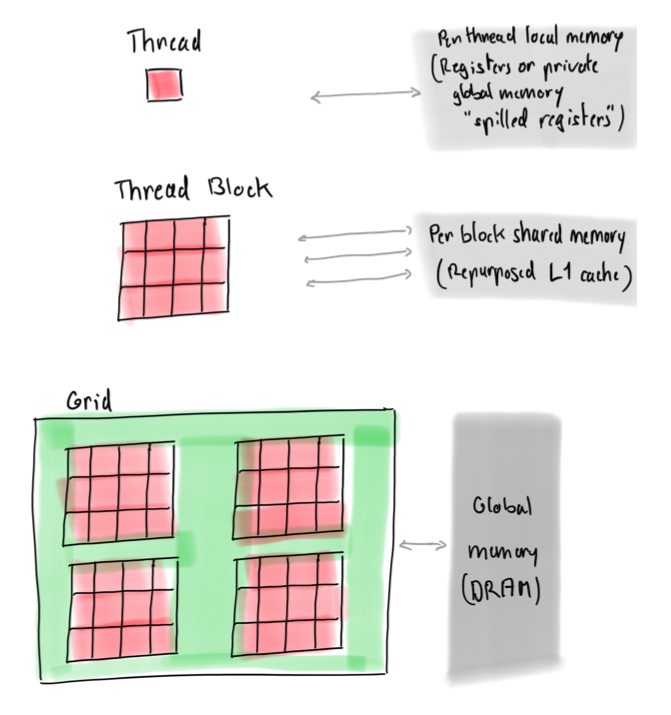
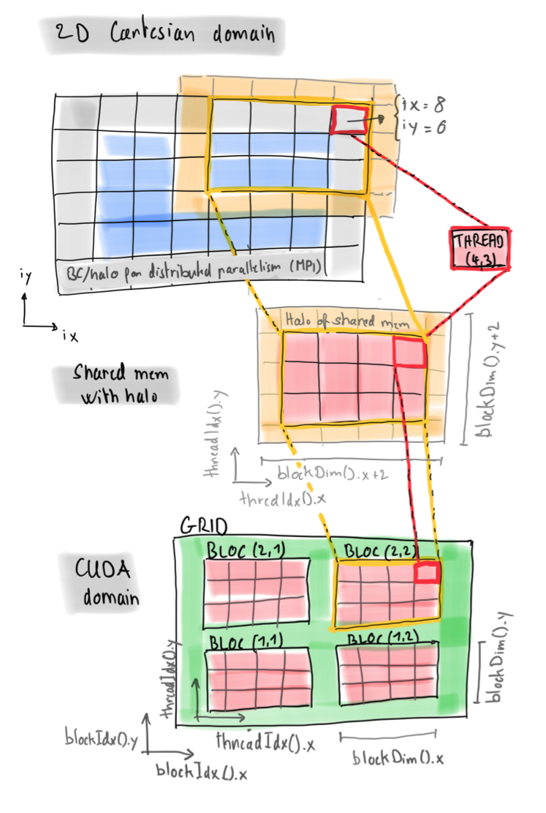
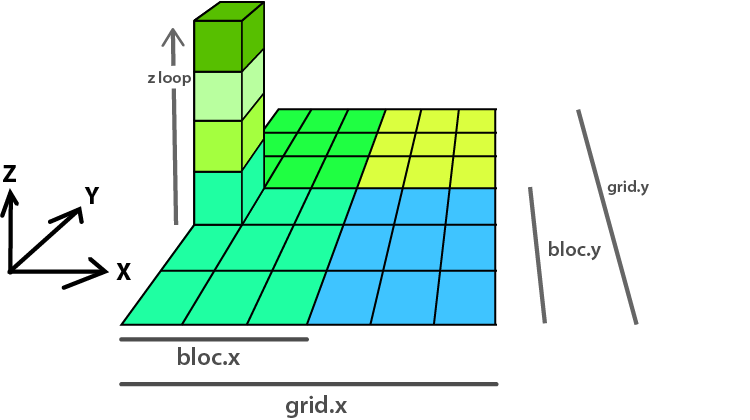
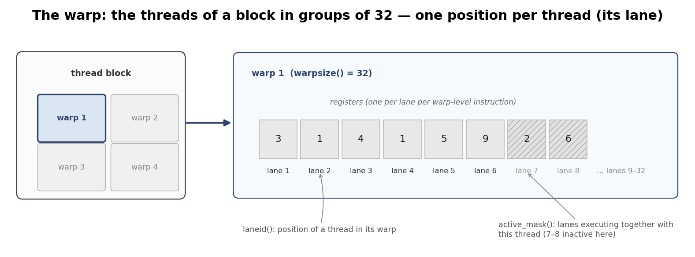
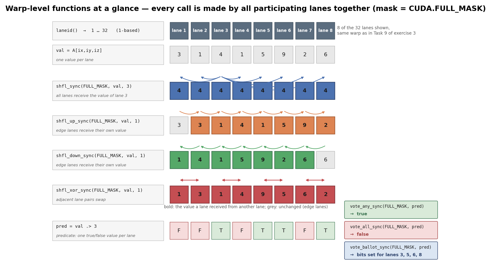

Advanced optimisations
The goal of this lecture is to:
- learn how to use shared memory (on-chip) to avoid main memory accesses and to communicate between threads;
- learn how to control registers for storing intermediate results on-chip; and
- learn how the threads of a warp can communicate directly through their registers with warp-level functions.
Recap on the performance of PDE solvers
In lecture 4, we saw that the performance of most scientific applications nowadays is bound by memory access speed (memory-bound) rather than by the speed at which computations can be done (compute-bound). For example, the Nvidia GH200 GPU on daint can perform about 68 floating-point operations per number read from or written to main memory. Therefore, we can consider floating-point operations to be “for free” in the memory-bound regime of iterative stencil-based PDE solvers.
To evaluate the performance of such solvers, we defined the effective memory throughput \(T_\mathrm{eff}\) in lecture 4. Unlike the total memory throughput, it does not count redundant memory accesses. Its upper bound is the peak memory throughput \(T_\mathrm{peak}\), which we measured on the GPU with a memory copy in lecture 5.
Recall that the effective memory access \(A_\mathrm{eff}\) only includes the fields that depend on their own history and the known fields. All other fields, e.g. fluxes, can be recomputed on the fly or stored on-chip. In this lecture, we will learn how to use on-chip memory to bring \(T_\mathrm{eff}\) closer to \(T_\mathrm{peak}\).
On-chip memory usage
We now want to get a high-level overview of how we can control on-chip memory in order to reduce redundant main memory accesses. In essence, we want to store values that are accessed multiple times by the same thread or thread block in on-chip memory, in order to avoid accessing them multiple times in main memory.
Let us first look at the different kinds of memory. There is memory private to each thread (“local memory”), memory shared between the threads of a block (“shared memory”), and memory shared between all threads of the grid (“global memory” or “main memory”).
Terminology on AMD GPUs
The terms introduced in this lecture are the CUDA terms. For AMD GPUs, different terms are used, originating from the standards of the Khronos consortium (OpenCL, Vulkan) and the HSA foundation. For example, threads are called work-items, and their groups work-groups (see the AMDGPU.jl quick start for a mapping of the terms). For simplicity, we stick to the CUDA terms in this course.

Shared memory
To use shared memory in our PDE solvers, we can use the strategy depicted in the following image:

In this approach, we allocate a cell in shared memory for each thread of the block, plus a halo on all sides. The threads at the boundaries of the block read from the halo when computing finite differences. As a result, we need to read the data corresponding to a thread block (see image) only once into shared memory, and we can then compute all the required finite differences reading only from there.
Registers
Making basic use of “local memory” is very simple: it is enough to define a variable inside a kernel, and it will be allocated privately for each thread. Scalars (and possibly small arrays) are stored in registers if the kernel does not use too many resources; otherwise, they are stored in global memory.
This “control” of register usage often becomes particularly useful when each thread computes the results not only for one cell, but for multiple cells, e.g. adjacent in the last dimension. In that case, the registers can store, e.g., intermediate results. The following image shows the scenario where each thread computes the results for a column of cells in the z dimension, which can be achieved by simply looping over the z dimension:

Warp-level programming
In the previous part, we learned how to control the on-chip memory that is shared between the threads of a block (shared memory) or owned by a single thread (registers).
Similarly to how processes communicate with each other using MPI, threads on the GPU can communicate with each other within the same warp, using warp-level functions. With these functions, the threads of a warp communicate directly through their registers: without shared memory, and without main memory.
The warp
As we saw in lecture 5, current Nvidia GPUs organise the threads of a block into groups of 32 threads, called warps (cf. the function warpsize()). The 32 threads of a warp execute their instructions together. Each thread occupies one position in its warp, called its lane (cf. the function laneid()).
The lane of a thread follows from its position among the threads of its block: the first 32 threads of a block form the first warp, the next 32 the second warp, and so on (in a 1D block, these are simply the threads with consecutive threadIdx().x). All threads of a warp reside in the same block.
Wavefronts on AMD GPUs
On AMD GPUs, warps are called wavefronts. They traditionally consist of 64 threads; newer AMD architectures use wavefronts of 32 or 64 threads.

One collective call: the mask and _sync
Warp-level functions are called by all participating lanes together, just like collectives in MPI are called by all ranks of a communicator.
Each of these functions takes a mask: a 32-bit value holding one bit per lane, where a set bit means “this lane participates”. The constant CUDA.FULL_MASK selects all 32 lanes of the warp.
All functions ending in _sync synchronise the participating lanes themselves: no separate synchronisation is needed around them.
Lanes are 1-based
In CUDA.jl, lanes are 1-based: both the assignment of the threads to the lanes (laneid()) and the lane arguments of the functions. In CUDA C, they are 0-based.
The warp-level functions at a glance

Warp-level functions (reference)
| Function | What it does | Result | |
|---|---|---|---|
| indexing | warpsize() | warp size (in lanes) | 32 |
laneid() | this thread’s position in its warp (the warp-level counterpart of threadIdx()) | 1…32 | |
active_mask() | lanes currently executing together with this thread | 32-bit mask | |
| shuffle | shfl_sync(mask, val, lane, width=32) | value from the directly indexed lane (within subchunks of width lanes) | val of the lane |
shfl_up_sync(mask, val, delta, width=32) | value from the lane delta positions towards lower lane IDs | val of the lane | |
shfl_down_sync(mask, val, delta, width=32) | value from the lane delta positions towards higher lane IDs | val of the lane | |
shfl_xor_sync(mask, val, laneMask, width=32) | value from the lane whose ID is obtained by inverting bits of the own ID (xor) | val of the lane | |
| vote | vote_any_sync(mask, pred) | whether pred is true for any participating lane | Bool |
vote_all_sync(mask, pred) | whether pred is true for all participating lanes | Bool | |
vote_ballot_sync(mask, pred) | one bit per participating lane, set if pred is true for it | 32-bit mask |
Here, pred is a predicate, i.e. a true/false value computed by each lane.
Other communication within a warp
For other communication within a warp, e.g. to separate shared-memory reads and writes, use sync_warp(). It is not needed around the _sync functions above, which already synchronise the participating lanes themselves.
An analogy: warp-level functions and MPI
Warp-level functions are always called by all participating lanes together, i.e. they are collective in invocation; the mask plays the role of the MPI communicator. The data movement of each function resembles MPI communication patterns that you know from earlier in the course:
| Warp-level function | MPI communication pattern |
|---|---|
FULL_MASK | the communicator |
laneid() | the rank of a process |
shfl_sync (same source lane) | broadcast (MPI_Bcast) |
shfl_up_sync / shfl_down_sync | sending to the left / right neighbour processes (MPI_Send / MPI_Recv; used, e.g., for the halo updates in ImplicitGlobalGrid.jl) |
vote_any_sync / vote_all_sync | MPI_Allreduce with a logical reduction operation |
The analogy lies in the communication pattern, not in the API.
Warp-level functions in practice: Task 9 of exercise 3
In Task 9, you will implement a partly parallel summation in a cumsum kernel, which uses a butterfly communication pattern: in each step, values travel across a distance that doubles (1, 2, 4, … lanes), and every lane combines the value it receives with its own. The pattern is implemented with shfl_sync calls:
shfl_sync(CUDA.FULL_MASK, cumsum_tx, pos, width) # pos: the lane to read from
The running total is carried over between the chunks in the x dimension by broadcasting the total of the last thread to all threads, also using shfl_sync.
This is just a teaser: in the instructions of Task 9, you will find a schema that explains the details.